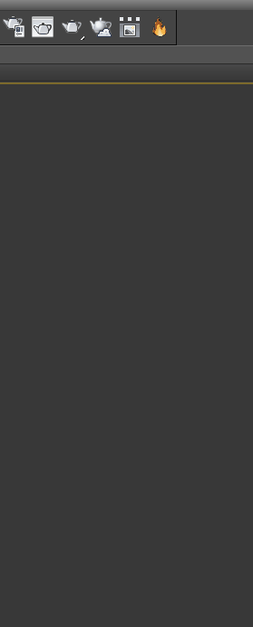
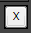
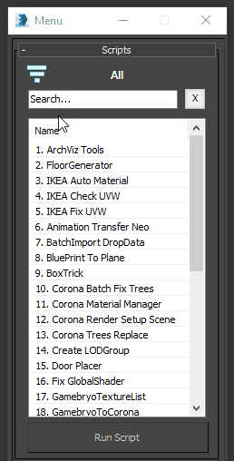
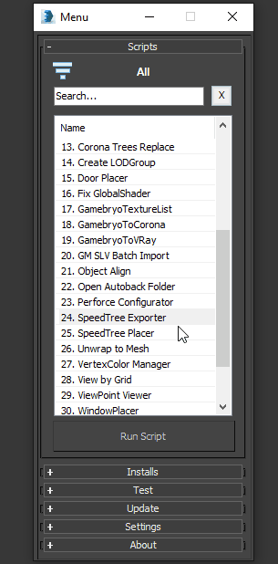
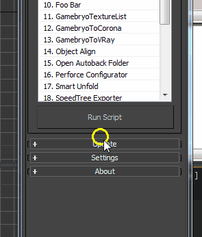
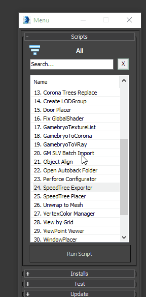
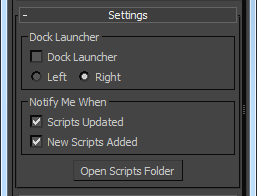

Scripts Launcher
With Scripts Launcher you can run, search, sort by category, add to favorites and update scripts.You no longer need to create a button in the interface, or search for files of scripts, all is now in one place.
Scripts Launcher get list of scripts from:
Network:
\\visco.local\data\Instal_Sync\scripts\scripts\Features:
- Scripts list
- Quick search
- Filter by category
- Favorites
- Updates
- Dock window
- Quick info and help about each script
- Quick install *.mzp and *.mcr plugins
- Notification when script updated or added
- Remember window position
- Test scripts feature
- Savable settings
- And other
Install
- Drag&Drop in to 3Ds Max INSTALL.mcr
- Go to menu Customize → Customize User Interface...
- Open tab Toolbars
- Choose [VISCOCG] category
- Create new tool bar, press New...
- Drag&Drop Scrpts Lanuncher in to created tool bar
- Save settings, press Save...
How to Use
- Run Scripts Lanucher
- Select script from list
- Press Enter, or press Run Script for launch the script.

Search
With search feature you can find script by part of name.When you type part of script name in search form, in the list shows the scripts found.

For clear search form press Esc or button Clear.

Categories
With categories feature you can filter scripts by team name .When you choose category you can see scipts depends only for current team.
Also has three service categories: All, Favorite and Custom.

All - displays all scripts.
Favorite - displays only scripts which marked as favorite.
Custom - displays scripts added from your pc.
Favorites
Commonly used script or set of scripts for the current job, you can save to favorites.It helps avoid getting lost in a large list of scripts.
How to add to Favorites:
- Select script in list
- Press right mouse button → Add to Favorite
- Open tab Favorite
How to remove from Favorites:
- Open tab Favorite
- Select script in list
- Press right mouse button → Remove from Favorite
Custom scripts
You can add to Scripts Launcher custom scripts located on your pc.How to add to Custom:
- Select Custom category
- Press right mouse button → Add to Custom
- Select script
How to delete from Custom:
- Select Custom category
- Press right mouse button → Remove from Custom
Installs
In section Installs provided some scripts which can be installed as toolbar button or plugin.Select from dropdown menu needes script and press Install.
After installation you can see information about success process and how to add button on toolbar.

Updates
Automatically update:
You get latest versions of scripts automatically when open Scripts Launcher.For get latest version of scripts or receive new, open rollout Update and press the button Update Scripts.
If new releases of scripts founded you receive notification.

For view detail information about new releases, select script in list press right mouse button and choose Info about script option.
Scripts Info
For display information about script:
- Select script
- Open context menu
- Press Info about script
For the old scripts, or scripts copied manually this info not displayed. It works only for scripts adopted for Scripts Launcher.
Settings
Dock Launcher - pin Scripts Launcher window to left or right side of screen.
Notify Me When - turn on/off notification about updated scripts and newest scripts.
Open Scripts Folder - open " d:\tools\3dsmax\VSscripts " directory
About
Scripts LauncherAuthor: MastaMan
Version: 1.x.x
Revision: 10.06.2016
ViscoCG